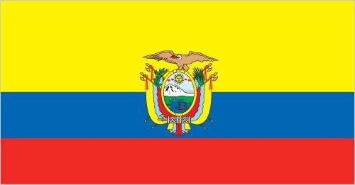
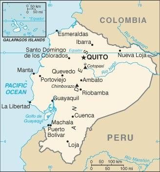

A Country in South America
Introduction
Ecuador was a successor country following the collapse of Gran Colombia in 1830. Between 1904 and 1942, Ecuador lost territory in conflicts with its neighbors.
The country has been politically unstable for much of its recent history, with 20 constitutions since gaining independence.
Country Flag
The Ecuadorian flag consists of three horizontal bands of yellow at the top, blue and red with the coat of arms superimposed at the center.

The flag retains the three main colors of the banner of Gran Colombia, the South American republic that broke up in 1830: The yellow color represents sunshine, grain, and mineral wealth. Blue represents the sky, sea, and rivers, and red as the blood of patriots spilled in the struggle for fredom and justice.
US State Dept Travel Advisory
The US Department of State currently recommends US citizens exercise increased caution in Ecuador due to civil unrest and crime; some areas have increased risk.
Consult the website via the link below for updates to travel advisories and statements on safetly, security, local laws, and special circumstances in this country.
Pasport/ Visa Requirments
US Citizens should make sure their passport will not expire for at least 6 months after they enter the country even if they do not intend to stay that long.
They shoudl also make sure they have at least 1 blank page in their passport for any entry stamp that will be required.
A visa is not required as long as you do not stay in the country more that 89 days in a 12-month period.
People and Society
With a population estimated to be about 17,289,554 individuals (2022 est.), the ethnic groups of Ecuador consists of Mesitzo, Montubio, Amerindian, Afroecuadorian and Mulatto.
| Group |
Percentage |
| Mesitzo |
71.9% |
| Montubio |
7.4% |
| Amerindian |
7% |
| White |
6.1% |
| Afroecuadorian |
4.3% |
| Mulatto |
1.9% |
| Black |
1% |
| Other |
0.4% |
The 2022 estimated population growth rate was set to be about 1.13%
Languages and Religions
The official language of Ecuador is Spanish (Castilian) which makes up 93%. Quechua Language at 4.1%, other indigenous languages at 0.7%, and foreign at 2.2%.
Note: Quechua and Shuar are offiial languages of intercultural relations; other indigenous languages are in official use by indigenous peoples in the areas they inhabit. (2010 est.)
Traditional Cusine
Ceviche- raw fresh fish marinated with line juice and mixed wih chiles, onions, tomatoes, and cilantro.
Typically served with patacones (think fried green plantains), chifles, corn nuts or popcorn.
Cultural Practices
Roses make excellent gifts, and among close friends perfume is considered appropriate.
Geography
Ecuador's climate consists of tropical conditions alonf the coast and in the Amazonian jungle lowlands, but cooler inland at higher elevations.
The country has a total area of 283,561 sq km; inland area being 276,841 sq km, and a marine area of 6,720 sq km.
Natural Resources
Ecuador's main natural resources are petroleum, fish, timber, and hydropower. It is the fifth-largest producer of petroleum products in South and Central America.
The country is rich in natural resources such as gold, silver, and crude petroleum. Despite having rich reserves of base and precious metals, Ecuador is not a key producer of mineral commodities.
Location

Ecuador map showing major cities as well as parts of surrounding countries and the Pacific Ocean.
Tourist Destinations
- Galapagos Islands
- Quito Historic Center
- Cuenca Historic Center
- Cotopaxi
- Cajas National Park
- Guayaqiul Boardwalk